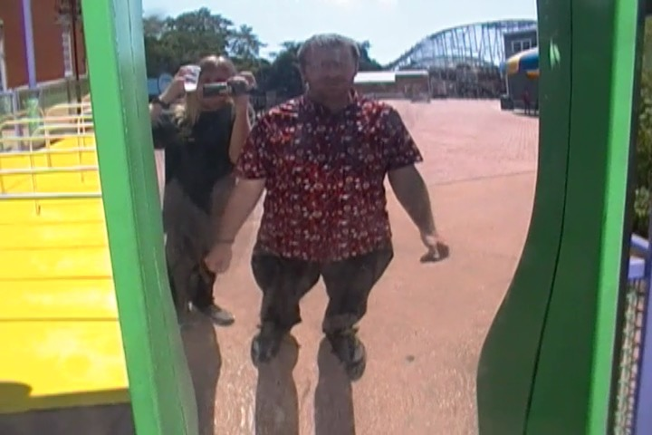

| |
Mid-Atlantic Trip 2019
Washington D.C Six Flags America Pigeon Forge Dollywood Carowinds Busch Gardens Williamsberg Kings Dominion
Well, we've had a lot of fun so far. But....for all the fun we've had in Washington D.C, this is still a roller coaster trip. And....the time has come. It's time for us to go to go to our first park of the trip. And hey. I'm finally at a park I haven't been to before in the U.S.
So Six Flags America is a park that I didn't really know what to expect. I mean, this is a park that gets A LOT of bad reviews. I mean, this park generally gets lumped in the same category as Mt. Olympus and La Ronde. So I was not looking foreward to that. But then again, so does Fuji-Q, and I had a really fun day there and thought the hate was really overhyped and overblown. So let's visit Six Flags America with an open mind and see how they are.
Hmm. Not a very convincing Gotham City you got going SFA. Just a hint. If SFMM is doing a better job at theming than you, step back and think to yourself "Where did I go wrong?". =P
Well, I can see where all the good rides in this park are located.
Considering that this ride has been having all sorts of problems this summer and a couple weeks ago, I was worried about whether Batwing would be open for us, let's just knock it out now before it craps out on us.
F*CK!!! NO!!!! WE'RE ALREADY TOO LATE!!! ='(
Phew. I would be annoyed at this, except I am just so relieved that I'm gonna get on Batwing today after all.
"I don't know what you punks are smoking, but there was NEVER a coaster at this park named after me! You got it!?"
 First coaster of the trip!
First coaster of the trip!
 I'm not sure if this is a controversial opinion, but....I was dissapointed with Superman: Ride of Steel.
I'm not sure if this is a controversial opinion, but....I was dissapointed with Superman: Ride of Steel.
Now don't get me wrong. Superman is still a really fun coaster, there are so many worse coasters out there, and it's even far from the worst Hyper Coaster. But....this ride has a couple issues.
 Yes. It is true that this ride does have some really strong ejector air. However...
Yes. It is true that this ride does have some really strong ejector air. However...
 There is just too much random crap and straight track. Let alone those giant helixes that look they should have a lot of laterals, but might as well just be straight track as it's as thrilling as straight track. Honestly, Superman is the Great Bear of hyper coasters. Yeah, both are fun rides. But both have too much random crap in them to be the best in their category, and both honestly feel overrated. Sorry.
There is just too much random crap and straight track. Let alone those giant helixes that look they should have a lot of laterals, but might as well just be straight track as it's as thrilling as straight track. Honestly, Superman is the Great Bear of hyper coasters. Yeah, both are fun rides. But both have too much random crap in them to be the best in their category, and both honestly feel overrated. Sorry.
Starflyers are fun and all. Too bad the view from this one sucks.
This alone is a much better view than what you get from the top of the Starflyer (OK. Fine, there are some good ariel shots of Superman and Batwing up there).
 Hello Poltergeist....I mean Jokers Jinx. Boy am I happy to see you today.
Hello Poltergeist....I mean Jokers Jinx. Boy am I happy to see you today.
A couple funhouse mirrors in the line is not adequate theming. Please try again.
I know it's not the best launch ever, but the launch right out of the station here is still really good.
Much like Poltergeist, Jokers Jinx is a big fun twisted mess that messes with your senses.
Why couldn't these Spaghetti Bowls be the coaster that Premier really went crazy with and cloned everywhere?

Uh oh. Looks like all the complaints about the Six Flags America clientele are true. Just look at the people who come here!
Hmmm, it's really hot out today, there are no lines, and this is supposed to be a really good water ride. Should we take a ride?
Quack! Joker gets an RMC, a Spaghetti Bowl, and several frisbees! Riddler gets the best B&M Stand Up! Mr. Freeze gets both of Premier's best coasters! And all I get is this spinning raft ride!? Quack! Penguin is tired of getting the short end of the stick!
So I know I kept hearing that these things are supposed to spin a ton. But....this is the 3rd one I've done, and the 3rd time I've been dissapointed with how tame these rides are. =(
 Oh look at the time. Batwing has finally opened up. Time for us to ride.
Oh look at the time. Batwing has finally opened up. Time for us to ride.
 I love how the terrain isn't suited for the clone, so the park just told Vekoma "MAKE THE FOOTERS BIGGER SO THEY REACH THE GROUND!!!" ;)
I love how the terrain isn't suited for the clone, so the park just told Vekoma "MAKE THE FOOTERS BIGGER SO THEY REACH THE GROUND!!!" ;)
 While not quite as smooth as Firehawk, it's still a really fun ride.
While not quite as smooth as Firehawk, it's still a really fun ride.
 Why do people hate on the Vekoma Flyers? They're really freaking fun! So underrated.
Why do people hate on the Vekoma Flyers? They're really freaking fun! So underrated.
Uh...why is our rental car in the middle of Six Flags America?
Good thing I don't give a crap about the train.
 I have the strangest feeling that I've ridden this ride before.
I have the strangest feeling that I've ridden this ride before.
Oh, of course! This was Iron Wolf @ Six Flags Great America before moving here.
 So this ride started as Iron Wolf, then it got relocated to Six Flags America as Apocalypse. Then this year, Six Flags decided to jump on the Floorless conversion bandwagon and turned Apocalypse into Firebird.
So this ride started as Iron Wolf, then it got relocated to Six Flags America as Apocalypse. Then this year, Six Flags decided to jump on the Floorless conversion bandwagon and turned Apocalypse into Firebird.
 You know, the more floorless coasters get converted, the less I like the idea. I supported Vortex becoming Patriot, and I was fine with Mantis becoming Rougarou. But as time goes on, I'm souring on the idea. As.....I actually like stand up coasters.
You know, the more floorless coasters get converted, the less I like the idea. I supported Vortex becoming Patriot, and I was fine with Mantis becoming Rougarou. But as time goes on, I'm souring on the idea. As.....I actually like stand up coasters.
 As Iron Wolf, it was rough. Yeah. But there was a weird sort of....hypnotic whip that went with the roughness. Here, it just feels like Patriot. OK, it's a little whippier than Patriot. But...it feels like a bland floorless coaster now.
As Iron Wolf, it was rough. Yeah. But there was a weird sort of....hypnotic whip that went with the roughness. Here, it just feels like Patriot. OK, it's a little whippier than Patriot. But...it feels like a bland floorless coaster now.
 Still a fun ride and all. But I just want to warn Six Flags, especially now that they've actually converted one of their stand up coasters. You leave Georgia Scorcher alone. Don't even think of doing this to it!
Still a fun ride and all. But I just want to warn Six Flags, especially now that they've actually converted one of their stand up coasters. You leave Georgia Scorcher alone. Don't even think of doing this to it!
Aside from the poorly themed Gotham City, the other "themed area" the park attempts to have is a Mardi-Gras themed area. Cause hey, I'm sure the people here don't need any more excuses to drink and party.
Hey look! Another unique and original attraction that we haven't done yet at Six Flags America.
Gee. I wonder if the park is busy today.
So the park decided to put up Wild One trivia for you to study while you waited in line for it.
Jokes on them. There are NEVER lines at Six Flags America.
 So Wild One tends to get mixed reviews from other enthusiasts. And....this is certainly an interesting ride.
So Wild One tends to get mixed reviews from other enthusiasts. And....this is certainly an interesting ride.
 On the one hand, it has a decent amount of airtime. That's good. But it also has a couple rough spots where it really jackhammers. Bummer. But all in all, I'd still give Wild One a thumbs up.
On the one hand, it has a decent amount of airtime. That's good. But it also has a couple rough spots where it really jackhammers. Bummer. But all in all, I'd still give Wild One a thumbs up.
Don't worry. I did.
Pathetic puny drop tower! You're practically cliff jumping size!
I'm not sure why, but these Falling Stars are really fun rides.
Hey. I know we have them at home, but at least here, no one's gonna bitch if we snap these fliers. =)
 I know I don't have to ride this since I got the credit at Six Flags Great America. But....it was super fun when I rode it over there, and there's no line. Let's see if it still holds up.
I know I don't have to ride this since I got the credit at Six Flags Great America. But....it was super fun when I rode it over there, and there's no line. Let's see if it still holds up.
 HOLY SH*T!!! THIS THING CAN STILL SPIN!!! One of the best Spinning Mice ever!
HOLY SH*T!!! THIS THING CAN STILL SPIN!!! One of the best Spinning Mice ever!
Those actually do sound good. Too bad they're so damn expensive.
 Uh oh. What are we doing in the kiddy area?
Uh oh. What are we doing in the kiddy area?
"HELP ME BUGS!! THEY'RE TRYING TO ERASE ME!!"
 *Sigh* Yes. I am a credit whore. I have no shame.
*Sigh* Yes. I am a credit whore. I have no shame.
Even by kiddy coaster standards, this thing was awful. >=(
Nice Loony Tunes Foun....HOLY SH*T!! IT'S JUST A STATUE!! I guess they're trying to conserve water here.
Hmm. What else haven't we done. Teacups anyone?
♫You Spin Me Right Round Like a Record♫
 Hi Six Flags Discovory Kingdom. How's it going?
Hi Six Flags Discovory Kingdom. How's it going?
 I love it when we have unofficial ERT sessions.
I love it when we have unofficial ERT sessions.
 Considering how long it's been since my last Roar ride, this was a real blast from the past.
Considering how long it's been since my last Roar ride, this was a real blast from the past.
Hey. It was fun. But at the same time, it honestly was a reminder as to why I don't miss Roar and have no problem with it becoming Joker.
Joker clone on the East....Nah. They'll NEVER spend real money on this park ever again.
Ugh. The merchandise here is sh*t.
Final credit left in the park and...*groan* SLC time.
 Well, at least this is the only SLC of the trip. After this, I won't have to worry about them any more on this trip.
Well, at least this is the only SLC of the trip. After this, I won't have to worry about them any more on this trip.
Meh. It was average. Not a great ride by any means, but this one wasn't too rough.
All right. Time for me to weigh in on Six Flags America and critique the park.
The good news. This park does NOT give me bad vibes like La Ronde and Mt. Olympus. It's NOT in the same category as those parks, and much like with Fuji-Q, I think the hate for this park is overhyped.
The bad news. How the f*ck is this park still in business!? It feels like the park doesn't have the chance to have bad operations since...there's NOBODY here! Honestly, what this park really reminded me of more than anything was Geauga Lake (First out of state park BTW). And that park f*cking closed a couple months after I visited. I mean, this park was DEAD. And it didn't feel like this was an abnormally quiet day. This felt like a standard summer day. I know the park is now just a dumping ground for coasters other Six Flags parks don't want (Hello Iron Wolf & Ragin' Cajun), but I guess they make enough money from overpriced food and parking to keep the coasters running and....f*ck it. Why not keep the park alive? They actually do have a decent coaster collection. They just never add anything new.
Oh yeah. We also rode that scrambler BTW.
 Well....I've done everything. I think more brain scrambling is in order here.
Well....I've done everything. I think more brain scrambling is in order here.
After what happened to Firehawk at Kings Island, I'm gonna get all the rides on Batwing that I can while I'm here.
 Dear Six Flags America, please let Batwing live. The Vekoma Flyers are really becoming rare and are also a very fun ride.
Dear Six Flags America, please let Batwing live. The Vekoma Flyers are really becoming rare and are also a very fun ride.
 And of course, we might as well get some more Superman rides.
And of course, we might as well get some more Superman rides.
I know I haven't exactly been nice to Superman in this update, but those bunny hops into the brake run really do provide some great airtime.
Well Six Flags America, I had a lot of fun here, got to ride all your coasters, got plenty of rerides on the good ones, and even rode some random flat rides (like this one), but I think we've had enough. And considering that we've now got an 8 hour drive to Pigeon Forge tonight, we should probably get going now.
Ooh! What's that I see while driving down the freeway!? YES!!! Time to go back to Bojangles. =)
This stuff is good and all, but....come on. Give us more Cheerwine.
I really wish this chain would come over to California. 2nd best fast food chicken chain, just behind Raisin' Canes.
$2.56 per gallon of gas!!? I WISH we had those prices back home (Especially considering how often I have to buy gas thanks to my current job)!!
Ugh. After 8 hours of driving, it's good to finally be able to check into our cheap hotel at 1:30 AM. Time to crash.
Pigeon Forge
Home
|